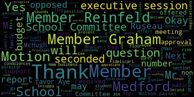
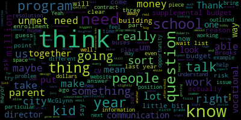
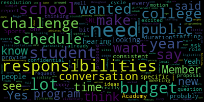

AI-generated transcript of 11.18.2024 - Regular MSC Meeting
English | español | português | 中国人 | kreyol ayisyen | tiếng việt | ខ្មែរ | русский | عربي | 한국인
Back to all transcripts
[Lungo-Koehn]: Member Ruseau, Member Olapade, and myself, present. No student reps, I'm assuming, because it's our 515. We'll let you know if they come on at 6. If we may rise to salute the flag. I pledge allegiance to the flag of the United States of America, and to the Republic for which it stands, one nation, under God, indivisible, with liberty and justice for all. We have our executive session upon motion to enter into executive session pursuant to general laws, chapter 30A, section 21A. The Medford School Committee will convene an executive session to update on negotiations with Medford Educational Secretaries, AFSCME Council 93, and the Massachusetts Nurses Association, because an open meeting will have a detrimental effect on the bargaining position of the committee, and the chair so declares an executive session pursuant to 30A, section 21-2, to conduct strategy in preparation with non-union personnel or contract negotiations with non-union personnel, our superintendent of schools. The Medford School Committee will convene in public session immediately following the conclusion of executive session approximately at 6 p.m. Is there a motion to go into executive session? So moved. Made by member Intoppa, seconded by? Second. Member Branley, roll call, member Intoppa? Yes. Member Graham? Yes. Member Branley? Yes. Member Reinfeld? Member Ruseau? Yes. Member Lopate? Yes. Myself, yes. That's seven in the affirmative, zero in the negative. We're gonna move to executive session and we'll be back on or around 6 p.m.
[SPEAKER_02]: Thank you.
[Edouard-Vincent]: books from 1924 to 2023 are now available on our website to view. There are many people with us tonight whose senior or staff pictures are featured in the digital collection, including our very own 1998 graduate of Mustang High School. Yes, our own Mayo Lungo-Koehn. Again, that's 1998, if you'd like to check her out. This project was managed by the Digital Commonwealth, a Massachusetts nonprofit funded by our state budget, and in collaboration with the Boston Public Library. Together, their goal is to both preserve and disseminate historic materials to the general public before they deteriorate and become lost forever. All your books, as well as a 1965 newspaper article discussing the fire of the old Medford High School can be found under the students and families tab of our district's website. Thank you to our library staff member Maria Dorsey, Medford High School ELA teacher and yearbook advisor Mr. David Ambrose, and our digitalization partners for making this project possible. Woof woof, I said. I am thrilled to share some great doggie news. the Medford Public Schools Counseling Department has been matched with an assistance dog. The assistance dog will be a member of the Counseling Department, working to support students and staff. Our newest member of Mustang Nation is expected to join us after Thanksgiving. Our Director of School Counseling and Behavioral Health, Ms. Stacey Shulman, will be the handler and primary caregiver of the dog. The dog will primarily stay in her office at Medford High School, but may occasionally be seen in the halls or lobby. When outside her office, the dog will always be on a leash. Given that the dog will primarily be located at the high school, we are asking families and caregivers of high school students to please contact your school nurse in relation to any dog allergies. When Ms. Shulman and the dog are scheduled to visit a classroom across Medford Public Schools, families and caregivers will receive prior communication from the appropriate staff member. A wider announcement about our newest member of Mustang Nation will be shared with the community in the near future. Looking ahead, to this coming weekend. Medford Middle Schools and High School Drama Clubs will each take the stage this weekend for their fall performances. Our Middle School Drama Club will be performing a vaudeville, take two, on both Friday, November 22nd, and Saturday, November 23rd, beginning at 7 p.m. at the MacLennan School Auditorium. Concurrently, the High School Drama Club will be performing their adaptation of Almost Maine on Thursday, November 21st, Friday the 22nd, and twice on Saturday the 23rd. The ticket links for both shows are available on our Facebook page. Please go there to purchase your tickets. Also tomorrow, I will be sending an email communication to all families and Metro Public Schools regarding safe gun storage. We are a proud partner with Be Smart Community Volunteers, promoting the messaging of secure and safe storage. Please be on the lookout for that communication and more safe storage resources tomorrow afternoon. So next week, all schools will have an early release day on Wednesday, November 27th to begin the Thanksgiving break. Additionally, Medford Public Schools will be closed on Thursday, November 28th and Friday the 29th. We want to wish everyone an early happy Thanksgiving. May you use this time to celebrate and cherish the moments and be thankful for the tremendous impact you've had on those around you. Tonight's agenda is once again filled with important topics that impact our school community. We will hear a presentation on our after school care for students by our director of family and community engagement. This is Megan Fidler-Carey. Next we'll hear from our principal of the vocational school, Mr. Chad Fallon, regarding our robust CTE enrollment. And our final report this evening will be from our budget analyst, Mr. Gerald McHugh, regarding the FY26 school budget calendar. Thank you.
[Lungo-Koehn]: Thank you, Dr. Edward-Vincent. Thank you. Next up. We have our after school report. Megan Miss Megan Fidler-Carey, director of family and community engagement.
[Fidler-Carey]: Hello. Hi there. Can you all hear me?
[SPEAKER_02]: Yes.
[Fidler-Carey]: Yes. Okay Um, so this is, I a few weeks ago, just for some clarifications. Last spring, we had, I had given an update. That was more of a report. Last spring, I had checked in to say, you know, give an overview of how the program went over the year and some thoughts that we had about going forward with tuition prices as they compare to other districts and pay rates as they compare to other districts. And then some questions had come up that we realized hadn't really formally been answered. So this is, I think, more an update to answer those questions that you guys sent over a couple of weeks ago. So I sent in a report, so that would be, I think that's available for the public if they wanted to look for that, right? It's just some responses of attendance rates and, I mean, enrollment rates and waitlist numbers over time. So those are for both the before programs at each of the four schools and the after school programs at each of the four schools. And they sort of tell a story, as you all have heard me say a couple of times when I'm talking about wait lists. These numbers don't necessarily tell the story. That everyone's reading so sometimes these numbers look very high and it seems alarming that there are all these people in in on a waitlist for an after school program and we're imagining. That people are having to leave their job early to rush home and are potentially having to quit jobs what I realized a couple of times. is that, you know, for example, three weeks ago, you had put on the agenda that we would talk about this today at this November meeting. So I updated all of my numbers for 2024. And they read one way. And then over the past week, before I submitted the report to you, those numbers had changed pretty drastically. Because over that time, I reached out to families to say, Hi, just in an effort to keep accurate records, are you still interested in staying on this wait list? And some families had said, no, we're not interested. We found other things you can take us off. I realized that some of the names I had on my original list are kids that had moved. Some kids, we were still interested. And then we were actually able to place a couple of kids in that time. So again, it very much depends on when you look at the snapshot of these numbers. to understand what story they're telling. I think that's really important to put out at the beginning for that number one wait list question. I should ask, is this how you guys want to do this? Do you want me to kind of go through the questions one by one?
[Lungo-Koehn]: That sounds good. Thank you, Ms. Fidelicari. OK.
[Fidler-Carey]: All right. So I'll read question one was current wait lists for the school year by building and a comparison of the prior three years at a comparable point in time. Some of them, you know, some of the buildings, they've stayed pretty static, pretty consistent over time. Some of them have lowered. Maybe if we go through question one, then question two. So the wait list story was really what I wanted to talk to you guys about. So is there anything that stands out that anyone has a specific question about for question one?
[Graham]: Remember Graham. Hi. So, if I'm reading correctly and question one, sorry. Back away from my microphone a little bit here. What I am understanding is that for before school, there's no waitlist to speak of, except at the Brooks, and we aren't that far away from me being able to clear the before school wait lists, I think. And for after school, the wait lists, the enrollment at, if I'm reading this correctly, the enrollment at the Brooks is decreasing, which we knew. Enrollment at the McGlynn has increased. The Missittuck enrollment has decreased slightly and the Roberts has stayed flat, roughly. And the wait list is quite small at McGlynn and Missittuck, pretty consistent at the Roberts and biggest at the Brooks. Is that correct?
[Fidler-Carey]: Yes, and actually, as we go through the next couple of questions, which are looking at the other after school options in the area. You also notice that the percentages. of those students on the waitlist, you know, you're correct, highest at the Brooks, that are also enrolled in another program. So it's, again, they're not just, they're not going home. They are enrolled in another program. And I think, I think it's worth noting that I think the word is out that it's hard to get into the Brooks afterschool program. So a lot of people, once they're on that waitlist, they hold on to that spot. whether they've found another program or not. In fact, I did reach out to a Brooks family to say, great news, a spot has opened up for you. And they were really torn. She said, oh no, I feel like I have to take the spot because I know how hard it is to get into this program. And she took a whole week to talk it over with the family. And then they decided to stay with Sigma in the end. They decided not to take the spot. So they were holding the wait list spot because they know how hard it is to get into. But then when the spot opened up, they realized maybe it wasn't the best program for their student.
[Graham]: And Megan, can you tell us what is the difference for the Brooks under the wait list for afterschool? 127 parentheses 57.
[Fidler-Carey]: So the 57 is how many students are in other private provider programs. I realized that we were going to be talking about that in other places. Got it.
[Graham]: OK. Um, that that is helpful. Um, so can you I guess the other question that I have when I look at this piece of the puzzle is that I think I was under the impression that things would improve at McGlynn and Mississippi specifically because of city year and that does not seem to have been the case. So can you talk a little bit about why? Um,
[Fidler-Carey]: City Year is a nice add-on, but because of the, they've been working with us, but initially at the beginning of the year, because of the schedule that they had and the trainings that they were holding, they were not available to us right at dismissal, which is the most important time for us. You can imagine that's when the building feels the most, for lack of a better word, chaotic, because there's a lot of transitions happening, students passing in the hallway. If you know what's happening and you know that everybody knows where they're going, it's very impressive. But if you don't know what's happening, it feels like there's just kids everywhere going in every direction. But you can imagine that that's when I definitely need my after school staff on where they're supposed to be and alert because they have to be checking students in. And we have a very short turnaround time. If there's a student that is supposed to be with us in our line and is not, then we have to find them, which requires you know, an adult to break away from the group of children to go to the main office and say, were they dismissed and we weren't told or to call home to the family and find the kids. So that's a little bit of a, um, and that's where we were hoping that the city or people being on staff and on site would be helpful to us. But I know that at the same time, the school buildings were feeling the same way. Like this is a great time for the city or people to be on staff and on site to help with bus dismissals and to help with bus transitions. There are a lot of transitions right at that time that require a lot of very alert adults. And initially, the City Year folks were being put to work by the school buildings. So we had a conversation with the principals and we had a conversation with City Year folks, and they were willing to adapt and change a little bit. And we're seeing how that's working. But it's not every day. It's not five days a week. So we couldn't just kind of give them their own group. So it wasn't as much the, it wasn't kind of another that we could just take 20 more kids or 12 more kids to put with that staff member it wasn't like that that we had hoped it would be.
[Graham]: Thank you for clarifying that. I feel like that's the opposite of our impression of the value that City Year was going to bring to the table. So I'm really disappointed to hear that because part of the reason we made space in a really tight budget to be able to do this was to alleviate some of the real staffing issues that we have in the building and buildings. And if we're not actually solving those problems, I would be interested to learn more about the value that the team is bringing to the table and whether it's justified for us to continue the partnership. So I think that's not a question you can answer, Ms. Fidler-Carey, because that's a city year question, but just something that I think we should all be thinking about.
[Fidler-Carey]: And then, you know, I think- I mean, I do feel like I'm obligated to say that they have said they're willing to work with us, but so then, you know, so I'm happy to sit down and try and rework it again, but it just requires me being like, well, can I have the people five days a week, which I'm not sure that that's what the model is, so.
[Graham]: Oh, I thought it was the model so I would definitely like to know more about that because, you know, this is an annual expense and if we're going to spend money we need to make sure that we're getting what we thought we were getting from it and I get that there's stuff that happens in a new relationship that you work out the kinks. But if the kinks are forever, then that limits the value. So we just need to sort that out. I guess the other thing that I know when we talk about need the before school program is not the biggest need. It's not the thing people email us about. But I do think it strikes me as the most fixable problem. Like it strikes me as there's a handful of kids and there is space to be able to take in eight kids at the Brooks, one kid at Mississippi Tech and two kids at the Roberts. So I would be interested to know from your perspective, like what would it take for us to be able to clear those before school wait lists? And how can we, how can, how can we help sort of push that?
[Fidler-Carey]: Yeah, I can say that. So for some of the students, it will might require specialized staff. As we've, you know, we've had that in the past at the Roberts, where we had to have staff that were specifically trained to meet the needs of students. And so that is the case for a couple of these kids on the wait list. At the Missittuck, we realized we had two staff members originally, and now we're down to just one. The second staff member who was new to the district this year and signed on right away, realized that she actually couldn't continue, so we just have one staff member. And so that one student on the Missittuck wait list joined after the second person had left. So I hesitate to keep adding to that group until a second staff member can be hired. Because just as you know, if there's an emergency and there's only, if they're up in the gym and there's only one adult, it's just not an ideal situation. But it's really a matter of having the staff that can meet the needs of the specific students that we're talking about. But I mean, if we can find those staff, then I definitely think you're right, that that's a really doable fix. That one's not a space issue for exchange.
[Graham]: Yeah, so I guess I'm wondering if perhaps working with Miss Bowen to identify what those students needs are and identify staff that may be a match and maybe put out some emails, letting the right people know that we are looking for somebody with a particular skill set. who might be interested. I know it's only an hour in the morning, so there may be people willing to do it if we can be specific about what we need. And again, it's not the biggest problem that we have when it comes to the overall issue, but it is a fixable one, probably perhaps more fixable than the other issues, as far as I can tell.
[Fidler-Carey]: And I also have question one or shall I go ahead to the next? Because I agree that maybe the questions will kind of overlap. Yes, please continue.
[Lungo-Koehn]: Okay, thank you.
[Fidler-Carey]: So question number two says enrollment information at outside programs and a summary of the offerings Medford is supporting by transportation. So these outs, what we're calling outside programs are the private providers in the city of Medford. So many of you have heard of Graceworks, Sigma Martial Arts, Salem Street Karate Studios, Medford Youth Center, YMCA. The Ready, Set, Kids. Ready, Set, Kids has another program called RSK STEAM and also the West Medford Community Center. And these, I have a good working relationship with all of these guys. We keep in touch with each other regularly. Unfortunately, I did not get updated roster numbers from Salem Street Karate Studios. So the number, you'll see that numbers in parentheses, that's only the number of students that go by bus. So that doesn't capture any of the Roberts Studios. I hadn't heard back from them. in time to get the report out, but you'll notice that we do transport 237 students to these afterschool programs from our elementary schools by bus, all of them. So, and that dovetails nice with question three or overlaps with question three, which is for each wait list, the percentage of students on our wait list who are enrolled elsewhere. I realized I didn't fill in that bottom line, which is the actual percentages, So for Brooks, it's 46% of the waitlist are enrolled in one of these private provider programs. At McGlynn, it's 20%. Missituk is 14%. And Roberts is 29%. And if you look at the numbers of how many students are enrolled in the different programs, it'll show what I said before, which is the Brooks students stay on our waitlist, where Missittuck and McGlynn, for example, they have more students enrolled in those outside programs that then forfeit their waitlist spot with me because they say, no thanks, I no longer need that because I'm in this other afterschool program, so I don't need to stay on your waitlist anymore. So I think that that's just a result, again, what do these numbers, what story do these numbers tell us? I think that's a result of people knowing how hard it is to get into Brooks and hesitating to forfeit their waitlist spot. So let's stop with those two, because those are still about our elementary school after school as it exists. And then question four and five are more looking to the future and thinking about what other possibilities there are. So are there any specific questions about question two and three?
[Lungo-Koehn]: I don't see any, so you can continue. Thank you.
[Fidler-Carey]: OK. So the question for says you had asked about a description of efforts pursued in creating a program at the Andrews. And this is, I believe I started to tell in the spring, some plans that we had in progress. We had some discussions in the works. We put out an RFP. It was like a not so much a request for a quote, but as much a request, it was a quote and programming ideas. And we got back a couple of different options. And the one that we selected was from SNL Sports Academy. The report has the link to that, but you can also easily Google them, SNL Sports Academy. And they were going to, they came and we did a walkthrough at the Andrews Middle School. And the idea that we were working on was having the middle school be, or at the Andrews Middle School, which is the only building that's not being used for afterschool programming, to have the fourth and fifth graders from the elementary schools take a bus over and do a sports-focused program at the Andrews, which would free up a lot of spaces for the littler kids, which is where the highest concentration of the wait lists are at the elementary schools. We were hoping that that would alleviate it and the students that weren't necessarily interested in a sports focused one could go to the YMCA. I mean, sorry, the West Mansford Cultural Community Center because that caters to 4th, 5th, 6th, and 7th as well and does sort of, they sort of do more computer programming and that kind of thing. we thought we would be able to tap into both of the interests, but open up some more spots at the elementary school. So SNL Sports Academy was really open to any of our ideas. They were really excited to say they would make it work. And their model is they partner with colleges and hire student athletes to come work in the afterschool program. Because the first question I asked, the first question I ask anybody who tries to say that they can come help us with our wait lists is, how are we not competing for the same staff? because we're competing for people who are willing to work from two to six, which is a very small group of people, as we've talked about many times, how are you going to find different people than I would just find to hire myself? And that was their answer, which I thought was very attractive and compelling, is that they partner with colleges, with sports teams and coaches, and they hire college athletes. We ran into, we were running into a few logistical problems over the summer, trying to figure out how our middle school basketball was going to work out, how the spacing issues were going to work out at the Andrews. And, you know, just as I was starting to get a little bit panicked that that wouldn't work out, we got a message from the bus company that said there was no way they were going to be able to provide the buses anyway. So that, you know, killed that idea dead in the water in about July. As you know, We're not talking about transportation in this meeting today, but it does overlap considerably. The bus driver shortage, the national bus driver shortage has a direct effect on us and our afterschool opportunities. So the more we try and get creative about things outside of the school buildings that require us to then partner with our bus company to provide a bus, the more challenges we possibly face with that. So that's something we really need to consider. So if we can figure out the bus situation, I think that everybody's on board, we'd have to still continue the logistics of the middle school activities. But I think that that's a problem that we're all willing to work on. So that could start in the fall if we could get that fixed. So we'll continue working on that one. And then the other thing, and this is something that I've been working on for a few years. Again, I think I mentioned this in the spring, I was working with the mayor's zoning department or development department to try and say, what can we do for anybody who's interested in coming to Medford to open up a business? So I had reached out to other businesses that I've just heard of, that I've worked with in the past in different districts I've worked in, or heard about in different towns where I've lived. and said, hey, is there any chance you'd want to open up in Medford? And there were a couple that actually were. They're interested in moving to Medford and opening up their own private space in a storefront or a building. And they would run an after-school program. And what's nice is they would all be just a little bit different. So it could be meeting the actual needs and interests of the students. So I'm really hopeful that that can still take off. So I'm happy to do anything to sort of facilitate those conversations. I think the problem in the city has been space. There just aren't enough buildings that are appropriate for this. So I know that at least one of the organizations that's interested in moving into Medford has looked at both St. Francis and St. Clements. to move into, and they both just need extraordinary amounts of work. They have been, I wonder if it's because they were, I'm not sure why, but they didn't have to keep up with any ADA standards. They didn't have to keep up with any of the building standards that were required to keep up for the Department of Education. They weren't, and so the buildings would need a lot of work and updating to get compliant. Anybody that opened up in those buildings, even if it was us, even if we decided we wanted to partner with St. Clemens and open up a school satellite afterschool program, the building would have to become licensable by the early EEC, what is that? The Early Education and Care Department, which is who oversees school age after school programs. And so it would require just a lot of work, a lot of renovation and money. So I know that those conversations are still happening. I think, I don't know if they're at negotiation phase with those companies and St. Clements, because I think St. Clements is sort of eager to do something with that empty space. I'm not sure how appropriate it is for us to be a big part of those conversations, but whatever help I can do, I can make introductions or I can take notes at meetings. I'm happy to do that. And then, as we've said, I'll do my best to set up transportation for students to get to those places, but that's required if we have the drivers for it. I'll stop there and see if there are any questions. Oh, and I mean, the other thing that we've talked about in the past is the recreation department. Kevin and I had talked a couple of times about what different possibilities there were about him using the Andrews or him. And I think the Hegner Center, right, is on its way.
[Lungo-Koehn]: Yes. Thank you, Ms. Fidlukari. Yes, the Hegner Center is, we're working through rehabbing that location to create an afterschool program through Medford Rec. I don't, I'm not sure it'll be until 2020, late 2025, 26 is our hope. Okay. If there's no further questions there are member Reinfeld.
[Reinfeld]: Yes, so I have a lot of questions about the transportation logistics and I, this is probably not the time because we need more specific proposals but the concerns about busing students from every single elementary school to every other corner of the city around seems like a huge challenge but I think we can't have that conversation until there are more specific sites, so I just wanted to ask about the SNL Sports Academy and partnering with local colleges. Do they have the ability to provide that consistent program for the duration of the public school school year because a lot of college schedules are very different than the schedule. It sounds a little bit like SNL Sports Academy does one-time events and provides programming in after-school programs that have a base core staff versus having, are the student athletes the ones who are responsible for the full-time staffing for the duration of the public school year starting in August, ending in June, and having
[Fidler-Carey]: So that's a great question.
[Reinfeld]: There are a lot of challenges that college students have throughout the year that take them away from a regular weekly commitment. Anyone who's worked with college student workers knows that consistent staffing is a challenge.
[Fidler-Carey]: So we actually ended up partnering with SNL Sports Academy anyway. They when this wasn't working out, I went to them and said, well, you know, since we can't do the Andrews thing, can you actually help with my staffing problems at the at our four sites? And they said yes. So they provide some staff at each of the elementary schools currently. They're doing gym games. So that has helped relieve our staffing. Not considerably, but it has helped really. It has definitely helped. So we have two to four SNL staff members come every day to each of the elementary school programs, and they are in charge of the gym games. And so our students cycle through. It's on a rotation. And so they were there the whole year. It's a good question. I'm not sure how that works. I think that we don't have the exact same people every single day. I imagine it's because of different sports. So I'm actually hoping that we'll get some of the football players that they, when they originally gave us their pitch, they were sort of describing big football players coming in and the, you know, the little kids being so wowed by the football players, but obviously it was football season this year. And so they, we didn't get football players working in the afterschool program. So I'm hoping now that the season's kind of coming to a close that some of them will work in our winter programs. Currently, many of the students that we have now are college students. They're not necessarily, I mean, they're athletes, but they're not kind of coming from the big sports teams like I imagined when I heard that too. They've told us that they're giving us staff members every day, and so far they have. It hasn't been a problem. And what's really nice also is that there's a supervisor for each of them that splits by two schools. So we have two supervisors in the city that check in on their staff at each of the schools.
[Ruseau]: Thank you. Member Ruseau. Thank you. I appreciate the endless work on this. I realize it's your job too, so of course. I obviously think that what's going on in the programs is very important, but Could you describe for me, for all of us, what happens if you don't have the required number of staff for students? Let's say that there's, how many people are typically with a group of students?
[Fidler-Carey]: So the ratio that I try to keep is one to 10, but licensing requires one to 13. I try to do one to 10, knowing that we often have staff out.
[Ruseau]: So, you know, let's say that, you know, you're way under the ratios people called in sick. You don't have a substitute pool. Not that anybody else does for any other area except for, well anyways. And what happens in the district when you are not going to have enough people to be with the kids?
[Fidler-Carey]: So luckily we don't get in as much trouble as a private company would. We are license exempt because we are in a school building. because the state has already decided that this building is safe enough for students to be there all day. Our afterschool program does not need to meet the strict licensing standards. So we can therefore get to know the kids and the needs of the kids in a different way and staff accordingly. So that actually happened today. At the Brooks, I pitch in almost every day when we're short-staffed. And so I was at the Brooks today after school. I got called in because three of our staff members called out. And in one of our groups in particular, and it's a group that just coincidentally, most of the parents pick up pretty late in the day. And we've got four higher needs kids in that group. And so that requires a lot of thoughtful staffing. So I went and I kind of broke the, helped break the group in sections. so that we could help with the, we could address the needs of the different kids. I think what we do in that situation is not ideally, but if we were very short staffed, we would just put the group in more of an assembly format. So we would bring them all to one place so that there were I never like to have any of the staff by themselves, obviously, so there's always two adults with kids for the reasons as I described if somebody gets hurt, and you need to give them one on one attention or take them from the area there's got to be another adult in the room. So there's always at least two but it doesn't need to be that one to 10 ratio if everybody's in the same room so if you're all in the gym playing a gym game. that's not ideal because you know not all the kids like a gym game so we like to tailor it a little bit more and to have some quiet games and some creative crafts types things and then some of the sports stuff but if we were short staffed it would just mean kids couldn't, uh, we couldn't individualize it as much. So for example, at the Brooks last part of, we had some incidents come up at the Brooks last week because, um, two of our kids in one of the groups really don't like the gym games, but the art teacher who we usually have on staff was out for two days. And so that meant that we had to, we had to consolidate some groups. So this one student who usually we keep out of the gym games, we really just needed her to go there and it didn't end well. It ended in students having some meltdowns and getting in some, just being unhappy. And again, it's a long day for a lot of these kids, some who were in before and after school. And if they're doing these things that they don't want to, and if we have to consolidate like that, it's not ideal. But our staff does a really great job of getting to know the kids really well. So they take a pulse on that sort of thing and kind of make adjustments accordingly. And they might consolidate only the kids that are up for that and that don't mind being in a big group of everybody and put the right staff with it. They're very thoughtful about it and making those adjustments, but it's definitely not ideal.
[Ruseau]: Thank you. I certainly wouldn't have suggested it was anything but thoughtful. I mean, when the director has to fill in, the director's not doing your other job, which is continuous recruitment, program evaluation and development and all that other stuff. And so when I think about us adding, most school committee members have heard, why don't we just hire tough students or even high school kids or young adults, what is right where it is. And and the answer is, we can't just not have anybody there because they you know, the sports teams is a really good example. I mean, if we use them for our ratios, well, they're gonna go get on a bus and go somewhere to play a game. And can't just have the kids in the room without some adults. And what you know, we don't we don't want to end up with the director and you know, to assistant superintendents and the superintendent and everybody just like having to do after school programming. But if we keep increasing it and we are dependent on people that are not Not that they're not reliable people, but their schedule makes it so that they are not going to be a reliable body to be with the students. I just get very concerned. It's always the solution I keep hearing about. Students, in any capacity, I mean, college gets out before public schools do. My memory is that winter break for colleges is a lot longer than it is for public schools. I'm not saying we shouldn't use them for the way you are using them now, because I think the activities and that all sounds great, but that doesn't solve our capacity problem in my mind. And I just wanted to make that point because we can't be paying you to be filling in as an on the ground person. and also expect you to continue doing your regular job. Thank you.
[Lungo-Koehn]: Thank you, Miss Fidelicari. Member Graham?
[Graham]: Thank you. Do you have a number of buses that it would take for the Andrews to become viable?
[Fidler-Carey]: Well, originally when I was thinking it, I was saying 20 students from each school because that would make 80 students for that group. Now SNL kept saying they thought they could take more. They could take up to 100, but I wanted to kind of work it out and make sure it works first for all of the concerns that we just mentioned. So I was really thinking just 20 from each school, which would be 4 buses. I wouldn't necessarily be 4 buses, but it would be 20 seats, which as we know, I don't think there's any bus at any of the elementary school that has 20 seats free in it that we could add that stop.
[Graham]: So, and presumably the students at the McGlynn wouldn't need a bus. Correct. You're right. So three, that's right, three buses. And I think my question is 20, more than 20 kids fit on a bus. Is it really three whole extra buses, or is there some lesser number of buses that would make this viable?
[Fidler-Carey]: Well, there is, but that's what I was saying. I don't think at the, you're right, the three schools. I don't think there are 20 free seats on any one of the buses that are there. I mean, we would just have to do some configuring. I think it would be a challenge at the Roberts where we need a fourth bus as it is, and the Brooks where we only just got a fourth bus. I think those would need an extra bus. Maybe the McGlynn, they could reconfigure the stops and sort of make it so that they could fit it on one of their fourth buses. And I imagine a bus that could pick up it, because you can fit those 60 kids on one bus, but that's not time effective to go to all three of the schools to pick up before they go to the Andrews, especially at that time of day, that would be.
[Graham]: Yeah, the reason I ask, I think it's worth figuring out what the real number is so that we are coming up on the end of our bus contract. We're going to make these kinds of asks and we're going to need to be like precise and specific about it because we don't have an endless amount of money for buses. So we need to know what all the needs are. And I think it sounds like, your office probably has the data that we need there. So I just like you to pull that together so that when the time comes, we have an answer that is a little bit more precise available. Okay. Cool. And then the other comment I wanted to make is I have heard from parents repeatedly that Things haven't gotten better. I think that they have. But I think that the reason that they have gotten better is because of all of these outside organizations that have come to Medford right so our collective capacity has increased. your report doesn't necessarily show that and we didn't, I didn't ask for that so I don't understand. But it does, you know, I think it would be useful, maybe even just to add some of those like the comments that you've shared with us tonight like this report can tell us what the conclusions are and could talk about like how long has this program been in existence so that if we were to look at some consolidation of like all of our after school capacity in the city, what, what is it, and what is the like unmet need and there is still significant unmet need, but it's a different amount of unmet need than it was several years ago. In the collective so I feel like that would be really powerful information to to sort of get right and frame. We're at for those parents who say we haven't made any progress because. I think even if you look at this, you might walk away and say, we haven't made any progress. And again, I don't think that's true. But I think a slightly different look at this is something that would be powerful to keep on our website so that when people say things like that, we have a place we can point them to. The other thing I would point out is that in the superintendent's email on a weekly basis, um there is a list of job postings of things that we are positions that are open in the district and after school is not on the list um so it makes me wonder are we hiring for after school or are we not hiring for after school and if we're not hiring for after school why not um and maybe it just needs you know all the other positions are like just a hyperlink um maybe it needs like a few words about what that position is like how flexible it is what we're looking for, et cetera, so that you don't have to click into it and go into Frontline to find the job. But certainly, it should be on the list, unless and until all of these waitlist issues are resolved, which I know is not a thing we can accomplish. But we should certainly be looking for staff either to make sure you're not having to fill in or that we can do some targeted expansions here and there as people come online.
[Fidler-Carey]: Can I clarify, when you said you're hearing from families that it hasn't gotten better, do you just mean the wait list or is there something else that needs to be better?
[Graham]: I think the unmet need is what people talk about, right? Like, I need something I can't have is the overarching thing. I think people do talk about wanting to understand the problem and is it getting better or worse. So I do think there's some communication or some information that would be helpful on the website. I did recently hear people talk about our registration process being far less sophisticated than some of the private programs. And maybe there are some opportunities to work with our communications director and the website team to sort of shore up that process. So I think there's lots of opportunities across the the sort of spectrum of what is needed but I think the big thing that I hear consistently is the unmet need is still the unmet need and it's not improving and I don't think that's true um and I think this report says that but you have to sort of work at it to get to that explanation so maybe there's a way that our communications director can help put something on the website that like makes that a little bit more clear.
[Fidler-Carey]: I think another thing worth noting is what, we've talked about this before too, but what needing afterschool means, I think that definition has changed over time. So that would also be really hard to capture in these numbers because in the past, if there were parents home, in the home after school, then they wouldn't need afterschool. But I don't think that's still the case. I think a lot of parents work from home and they need their kids to not be in the house so that they can work, or they feel like their kids can't be in the house so that they can work and concentrate, or they don't want their students to come home to nobody else to play with. So they're thinking for socialization reasons, they would rather them be in afterschool, where I think several years or maybe just even five years ago, that wasn't necessarily the case. That wouldn't have been defined as need afterschool. So that's something that I don't know that we'd ever wanna get into the business of finding out, which is like how many houses are empty after school that a kid can't go home to an empty house, and somebody is gonna have to quit their job, versus ideally what they think is best for their child is to be in a socialized setting where they have other people to do their homework with, and it's not just going home by themselves, even though they have care.
[Graham]: Yeah, I mean, I think when I think of unmet need, it's people who are not in an afterschool program who believe that they need to be. And I would challenge anybody who talks about working at home as like an opportunity to watch your kids. If you are working at home, you are working. And having kids at home is, if you wouldn't bring your kid to the office, we can't reasonably expect people to do that at home either. Right. And lots of companies have very strict and rigid rules around what must be in place in order to even allow that so I think if people are, to me, unmet need is, I'm trying to get into an after school program and I can't. And for why you're trying to get into an afterschool program is not something I don't think we need to be particularly concerned about that. And like I said, I think it has gotten better. There's lots of programs on here that weren't here a year ago, two years ago, three years ago. And they are taking 40, 30, 45 kids. Those are all kids who were part of unmet need not that long ago. who now have a place right and I think it's to me like what I'm envisioning for our communications director because I know he's here is something that combines all of these independent charts and provides a picture where you don't have to sort of work hard to like look at all the the the weedy details and you can know that Our, the totality of our need is changing and it's increasing or decreasing or whatever. So I think that is what I would. I think people would appreciate that because I think people try to understand what's going on and find it very difficult. And in the end, we're not telling them information that makes them particularly happy. So serving it up in the sort of most cohesive way possible often is like a way around the fact that we're fundamentally giving people bad news when we're saying, no, I'm sorry, we don't have a space for your child in our program.
[Lungo-Koehn]: Thank you, Member Graham. Thank you, Ms. Fidelicari. We appreciate the questions being answered. Number three, we have the CTE Enrollment Report. Mr. Chad Fallon's patiently waiting. Director of, Principal of the Medford Vocational Technical High School. Welcome.
[Fallon]: Is this on? Yeah. Good evening, Madam Mayor, Madam School Committee, Madam Superintendent, School Committee, Lisa, Jayden. I wanted to share an update. I was thinking listening to Megan's conversation waitlist is something not foreign to me. And I want to speak a little bit about that tonight with just a brief update and kind of where we're at. We have seen over the last three years increased enrollment in such a way that is making us really look at the way we run our programs, the way we run our exploratory program, and to help get as many students in Medford into these programs as possible. However, we still are left with a wait list. So it's important to know that this is year three of a wait list of about 40 students each time, that when they choose their programs in grade nine, just about 40, It starts off a little bit higher. We're able to get it down to about 40 of students who don't get into their choice of programs. What we have found is that in some programs, because the demand is higher than ever before, there are programs that really call for additional teachers. One being auto technology, a second being culinary for auto tech and culinary would both be a third three teacher program. And metal fabrication and welding needs a second teacher. When we think about a new seven period schedule, it certainly allows for more opportunities. And I think we're closer than we've ever been before to looking at opportunities for all students within the building. If, you know, for example, a third teacher in culinary gives us the opportunity to perhaps run an elective, something that all students could benefit from. Similar to auto tech, I think all of us could use the skills that, you know, cooking and being able to care for your car, and there's certain things that I think all students could benefit from. So I think this becomes more of a reality than ever before when we look at this. It's also important to mention that teacher recruitment is well underway. When I say that, we are faced with an interesting challenge that we know there's a skills gap. We know there aren't enough trained individuals entering the workforce right now to enter the job market for these trades. The average age of an electrician right now is 63 years old. So while there's demand we don't have students that are filling the roles, as much as we'd like to but more importantly we don't have teachers that are willing to teach because it's a vast difference in pay, pay scale. So we are working with other schools. We're not alone. Every other vocational school in the state is feeling the burn. There aren't enough people willing to teach. So we're all kind of putting our heads together. And I think what you're going to see in the next year or two is a lot of perhaps out-of-the-box ideas on how to have these students trained and companies that will hire them. If I, there was a few, my mistake when I had sent this report, I made a mistake on a few of the programs. I just want to call out for the paper you have in front of you in terms of teaching staff biotechnology. We have, it's really one full-time teacher and then a 0.5. 0.5 is because the teacher is already in the building teaching other sections of science, but because the biotech program is growing, this teacher also helps us with the sophomores. The second issue was for graphic design. We are now at one teacher. And for film and TV, formerly known as media tech, we have two teachers. That's nothing new. That just was my mistake when I gave the report. So you can see the numbers. I think the number to keep in mind is sophomore. This is the second year that we brought. Last year, we brought in about 172 sophomores. What we're seeing is that less students are leaving, which is good. But if you see the numbers for grade 11, we're still, we're holding at about 140 students. So we have students that move out of district after grade 10, and we have students that just decided maybe isn't the right fit for them. So they go to a more traditional high school schedule. I think the number that we need to look at is the 423 students that we have grades 10 through 12 within the Medford High School campus that are accessing CTE. So with the freshmen right now, there's 273 freshmen. There's about 38 of them that are exploring an arts and technology rotation separate from CTE. So 273 students that we anticipate anywhere from 150 to 180 to 190 are gonna want programming. And essentially we're not gonna have seats for everybody. We're not alone. There's 6,500 students statewide that are on wait lists for the 55 to 60 vocational schools in Massachusetts. So we need to start being creative of how we can get these kids into seats because we certainly don't want anyone to go without. So we've been creative. We really try not to enroll kids after quarter one of sophomore year, but we make exceptions if a student moves out of district. And if there's another student that has been on the wait list, we do our best to get them in. A few things just to mention, while I have an opportunity. I want to share there's a few things that many things going on, but in our auto tech program right now we have three cars right now that are currently under our roof that will be partnering with second chance cars, this is our third year in a row, second chance cars is a 501 c three. where they donate cars to disabled veterans or people that are re-entering the workforce. This changes their lives drastically for obvious reasons. So we will work with this company out in Acton or Concord, right on the line, I believe. We work with him, he'll provide us the car, we get the car in tip-top shape, and then we donate it to the person in need. Our superintendents have been part of it a few times, it's pretty powerful. As I go down the list I was sitting here, forgive me, but I just want to give some updates biotech I think it's important to know that for the first time ever Winchester High School called upon the biotechnology students at our school to deliver professional development to their teachers, which was a very cool moment for them. Our carpentry program and I'm going to talk about carpentry and film and TV because on the same day I was at a construction mentoring program with six of our carpentry students that we were touring a job site Harvard University is building three new buildings and they took us on a tour we met with the construction company and the architects. And then after that, we zipped across town and watched our film and TV students were one of three finalists for the Mass Department of Transportation's Safe Streets campaign, where they created a video on safe driving. We didn't know what our place would be. So we were in the audience and we ended up coming up number two out of the state. So there was three, there was a first place, a second place and a third place and the film and TV crew earned themselves a spot as number two. Construction, just an update, if you're anywhere around the high school, you'll notice that some potholes have been filled in. Our Construction Craft Laborers Program is working alongside the DPW to work on filling potholes and helping to keep the area more safe. Our Culinary Program is killing it with Bistro 489. If you haven't been in, I encourage you to do so. Open for breakfast and lunch Tuesday through Friday. I should mention the electrical department right now in our shop. It was a collaboration between the electrical and metal fab program to, I don't know that I've actually seen them up, but there's some big Christmas bells that go, that get hung outside of city hall. And Mr. Cormier has a cool story because he worked on it when he was a student and now his students so many years later are doing the same thing. So those will be installed soon. Graphic design, a shout out to them. They decorate our school with more than just posters. We recently put above every doorway in the school building, our core values, respect, responsibility, empathy, and kindness. Those students are doing amazing work beautifying the school. Health assisting should be noted. We now have six students at Winchester Hospital and 100% of the seniors in the health assisting program are out on co-op, which is paid work. No one goes out on unpaid work in our program. And that's just kind of a quick update on where we are. So I'll leave you with this. As we look, you'll be hearing some ideas from both myself and my colleagues as we look to the future of career tech enrollment in Medford. A lot of planning is underway with the new building, what that will look like. We've been able to tour Waltham, Somerville, And what was the other school we just toured? I was with you all and I forget. Arlington. And there was another one too. I forget, maybe that was just me. So we have similar constraints, which is nice to hear. Somerville is also in a situation where they have more students than they have seats. But as we look to these other schools, we look at ways that we can increase capacity. We're also going to be looking really closely at our exploratory program and seeing how we're offering this to students and helping students make the right decision. In my world, the worst thing is a student who chooses career tech education. doesn't necessarily have a passion for it, I'm glad we get to offer it, but I worry about the kids who are on the wait list that might actually benefit from the trade as an electrician or as a construction supervisor or working in a restaurant. So we have to figure out really how we're marketing this to students when we start talking to them in seventh and eighth grade, what it means to be on a CareerTech pathway, But for the most part, as of today, when I looked at the wait list, we were down to 32 students. Unfortunately, now it's too late. We can't enroll anybody in any programs now, but we do get that wait list down, but we do need to start thinking about what it may look like in grade eight when students apply. I say apply, they don't technically apply, but we may need to be looking at other options to make it an equitable process for all students.
[Lungo-Koehn]: Thank you, Principal Phelan. Member Graham.
[Graham]: Are you following the state level conversations around vocational school admissions?
[SPEAKER_03]: Yes.
[Graham]: I know they've gotten heated. I haven't been as plugged into them, but I think that the general story is that vocational school enrollment has become so competitive that they are no longer equitable.
[Fallon]: Is that the general story? For years, when vocational schools were under enrolled, people didn't seem to pay too much attention to the admissions policies. And now that it's flipped, everyone is looking at the admissions policies. For the most part, you'll see for vocational schools, and we have a similar policy that we lean on, but we don't have to use because you don't have to apply to come to my school anymore. It's a little bit different. But they were typically looking at grades attendance and discipline, and a lot of schools came under fire about that because you know if you're a seventh grader and you have a mishap. Why should that really follow you into high school if you have one, you know, disciplinary action. The state, a lot of proponents of the change would like to see a lottery based system and there's people on both sides of that so you know we're in an interesting position because we don't have to worry about. Applications per se, but I do think we're closer to looking at what we may do in our own admissions criteria but yeah a lot of schools are under fire for this.
[Graham]: And then I would also like to see there be like radically improved communication to ninth grade parents. in that transition from the rotational exploratory program to like, you're making a choice for the next three years of high school. Like that came and went with like a lot of confusion last year. And my daughter was in that grade. So I heard from a lot of parents who were like, I don't even know what's happening. My kid is picking something. I had people be like, my kid is picking something I think is like a really terrible choice for them. I don't know what to do about it. And I think parents just like very much felt left out of that conversation in a way that was hard, I think was challenging. And to your point about taking a spot away, I get it. But at the same time, they're in ninth grade, and they don't know what they want and what they don't want. And so I don't know how you overcome that except to open the lines of communication. So I think that's important to really think about. And maybe think about like is it forever if you go in at in that like maybe are there two decision points like one in the last part of ninth grade and another at the end of ninth grade so that there is an opening or something in 10th grade if kids try try it out and decide it's really not for them. I don't know, I just, the communication was a real missed opportunity last year for sure. And I just had a front row seat because my daughter was like in that loop and actually like picked a program. She went to school that day and I was like, I don't know what she's gonna do. And when she came home, we're like, what did you decide? But it was very much, you know, she was fine to do it on her own and we were really happy that she did. I don't think every kid is in that situation. And I think there's a lot of parents who had a lot of questions. And I think one of the big questions is always like, what does it mean to be in a vocational program? And it's not the same in every vocational program, right? Where are you going, if you are in x vocational program versus why and those answers are very very different in the programming that we have and they also are nothing like being in a vocational program when we were kids right so I don't think we've ever like really unlocked. describing that to parents in a way that resonates. I mean, I've heard you say lots of times, it's not like it used to be. And I think people are like, oh, cool, but what does that mean? So I do think there's still some work to do to educate the parents in this conversation about what it means for them academically. I wouldn't have inserted myself, but it was not clear to me last year that my daughter was now gonna take online Spanish, for example. Like I think I conceptually knew that, but because I sit here, not because I was like sort of informed of that as a parent. So I just think there's a lot of academic pieces of the puzzle that are not as easy to put together on your own. So I don't know if maybe just like informational Zoom would help or something would help parents feel better about navigating that transition.
[Fallon]: No, that's totally fair. One thing I did this year that's different is that we're ending exploratory at the end of quarter two to give additional time so that instead of going through three quarters and only giving students a quarter to experience it, now they have two quarters. I hear you with the communication. From my seat, I feel as though I'm communicating because I'm doing a lot of talking points and things like that. But you're right. I think because of the shift in vocab and what it looks like now, I do need to do a better job having some better community forum, if you will, or parents to understand. And again, I think even though, you know, this is my eighth year. When I came in, it was the first year of no more application. So I think, you know, we're still trying to figure out what did that look like eight years ago when we were under enrolled as opposed to now. I would almost rather an application sometimes because then at least I would have something to work with. My biggest pain in Medford, which it's a great problem to have, to have all these kids, but any other vocational school you would go to, you would apply and you wouldn't step foot into the building unless you were accepted. So I have this internal struggle all the time where I'm like, here we are saying to freshmen, come one, come all, but 40 of you will never make it because we just don't have seats. So I'm with you. I think there's two problems. One being that we have to solve the, know the enrollment issue, and to just better share with parents because I hear you. Yeah, I do hear you on that.
[Graham]: And then I guess the other thing I would encourage you to think about. We, we outlined a series of expanded programs in our MSBA application that we worked on back in May, June. And we actually did lay out some level of programming that didn't need to wait for a new building and others that did like others that were like completely space constrained and we could not move forward on. The reason I bring that up is because, with a successful passage of seven question seven and question eight question eight in particular talks specifically about expanded programming. And there's a resolution on the agenda in just a little bit to talk about a supplemental budget in this fiscal year that would be able to spend the money that has been agreed to by the city or by the voters, I guess I would say. And there just may be an opening there for you to think about like, is there something we can do in the short term, whether it's like expanding a program with an additional teacher, and just make sure that Mr. McHugh has that information so when he's putting together the supplemental budget package that we're going to ask for, that if there are particular things that are vocational in nature, that they can be at the table as well.
[Fallon]: Perfect timing. I already had my budget meeting and he him and Noel are well aware.
[Graham]: And there is like a, you know, we'll talk about this in just a minute, but there is like a near term aspect of that money as well. It's not waiting until next fiscal year. So great.
[Fallon]: Yeah, good to know.
[Graham]: Yeah. So thank you.
[Lungo-Koehn]: Member Brindley.
[Branley]: So I have a whole bunch of notes because I'm a big fan. So I am honored enough to be on the advisory board for the vocational school through the culinary program through my daughter. And we had a meeting last week, the first one of this school year. I believe there was 120 in attendance. There wasn't a seat at the bistro to be had. We were looking for seats for which were together were parents, business owners in the community, staff members and students. And to look around that room and to see how much like really love was in the room was really overwhelming to me. For the culinary program, there was the executive chef for Earl's Kitchen, the owner of Goldilocks Bagels. There was an owner of, I can't remember all the things this gentleman did, but he was a friend of Chef C and he owned food trucks. But these people came out to, you know, listen to The students talk and show around the bistro and it was very impressive. You also gave out an award, and I believe it was the first award so I just want to know if you could tell everybody about that because I thought that was really cool.
[Fallon]: Sure, we. One of our long term well for about five or six years now Asher Nichols owns remodeling and construction business and he went when a few teachers and I talked about who do we want to recognize this year as an employer partner, he was the first one that came to mind so. You know, like all good ideas it was a little bit last minute of mine so I called on my friends down in engineering and I was like hey can you make me a plaque and of course they exceeded my expectations and carpentry got involved and it was pretty cool. So yeah, we awarded this to an employee partner, an employee partner to thank them for taking a risk I mean when you hire 16, 17, 18 year olds. you're taking a risk as a business owner and he's done it continuously. So that's something we're going to do from now on every year at our fall advisory dinner is honor one of our partners, because it's important to give a shout out to them because it's, you know, there's these, these kids are still learning and they're willing to take them on.
[Branley]: I agree. And I think it's amazing how many business owners were at that meeting that, that night and whether they're in the community or, you know, in the area and it, that group, got up and I believe there was one already graduate from Medford High and one student from Medford High that was working with them. And I just think it's really nice to recognize them to say like, you are taking this risk and we appreciate you. And there were just so many business owners there and so many people that you recognize from in the community that you're like, oh, she's a hairdresser. Oh, I know her from the elementary school or the local daycare. And it was just really, I think it's really a nice night. And I think more people need to know about it. Because if you aren't a vocational parent, you wouldn't know that that's on the schedule. Just a few things that I think about in my spare time. I think there's still a myth about the vocational school that I graduated Medford High 30 years ago. I'm going to my reunion at the end of the month. And you really went to the Vogue if there wasn't a great path for you academically. And I think there is this myth that parents still say, Oh no, I want my daughter to go to college. So she's not, she's not going to go to the Vogue. And I think maybe that's what member Graham was sort of mentioning. Like there are so many paths that include, you know, academics that I think that that is lost on some of, I don't know, I don't want to say the world, but definitely not just metric specific that You can go to the Vogue, and you are going to college. It's not just, you know, some of the programs are certainly more towards getting into a union or whatever, but I think that so many of them are also geared towards going to college. And so I think bridging that gap between the high school and the Vogue is so imperative because We do need kids to take language still. We still need kids to explore other options. And so obviously that's not just on you, of course, but just something that I think that we need to be aware of, that we need to get the word out. And I also am wondering, you do have to keep up your academics, correct, to stay in your shop.
[Fallon]: Of course.
[Branley]: Yeah. And so I think that people just feel like if you're there, it's because you are not excelling in academics, but it's actually the opposite. You need to keep up your academics.
[Fallon]: In fact, that's why you'll see a little dip in the numbers junior year, because unfortunately, some kids don't make it over the summer, you have to pass your academic core courses. If you don't, you have to fulfill them during summer school. And some of them might not do that. So their high school schedule will be changed to make up for the courses that they're deficient in, but then there's no room for CTE.
[Branley]: So yeah. Do you know if students' attendance on a day-to-day basis is higher if you're in the vocational program?
[Fallon]: I don't have that in front of me.
[Branley]: Just curious about that. And I'm always impressed that the academic teachers, and I noticed it a lot this year at curriculum night, how supportive the staff is to the vocational students, and I think it's really nice. They know that obviously the academics are priority, but they're talking about these students that are, they know that they're out at work, that they're doing co-op, that they're trying to tailor their teaching style to really incorporate what these kids love. And I think that that was so great to see in science and math and English, you know, these different academics that they want these kids to excel and still really be, you know, workers in the community. And I think that that was like a nice thing that I hear every year that the staff says, you know, like how important they know the voc is to these kids. Someone also mentioned to me how they feel like the behaviors of the vocationals school students is better because they're busy. Their hands are busy. Their minds are busy. And I even know in my house that there's never a question about wanting to go to school. You know, there's never a question about that. Like, I can't, I can't miss it. You know, I can't miss it. No, it's this day. It's, you know, my daughter chopped 30 pounds of onions today in goggles. She's never done. Yeah. Where do you see the picture? I won't show it publicly, but it was, it's awesome that, you know, there was no complaint. You know, she came home and she's like, I gotta get my shower smell like onions. I'm like, okay. But, but I think that they do things that are so out of the element, but because they love their shop, they want to, they want to do it. And I think that that's such a great incentive to come to school every day. And, you know, never wanting to be late. I think that that is Not that I would think going to school to chop onions is more exciting than going to school to do math. But on the day-to-day basis, I think these kids are coming to school because they love what they're doing. And I think that that is great. And so I just want to compliment you on that and the staff at the Vogue, obviously. Let me think. What else? I want to congratulate you, too, because you mentioned in the meeting the other day that not only are you the director and obviously the principal of a vocational school, but you're also managing 15 Am I correct? Yes. Businesses.
[Fallon]: Never a dull moment.
[Branley]: Thank you.
[Fallon]: I appreciate that.
[Branley]: Thanks. I'm just trying to manage my house and it's a lot some days, right? And so I know Memogram mentioned it, but what is your ultimate vision for a new Medford High School, Medford Vocational Technical High School?
[Fallon]: Oh boy. Let me get my blueprints. No, just kidding.
[Branley]: Can you send it to us, please?
[Fallon]: You know, seeing the other schools has been helpful because I've seen what I like and what I don't know that I love. And the whole MSBA process has, I'm assuming that we probably have a lot less input than I thought we would. And that's a good thing. We're not going to be here forever. We're building a school for 50, 60 years. So when I look at other programs, I'm picking up what I think would work for us and what doesn't. And I'm also being realistic, thinking when we sit down with these architects, they probably have an idea. And they're going to probably welcome our suggestions. But at the end of the day, we may not get everything we want. So I definitely have a list of things that I know are like non-negotiables. Here's what we know works. Here's what works for Medford. Here's what we need. But it's a really cool time to be an educator in Medford right now because it's getting closer and, you know, two years ago seven years away and now maybe it's five years away or four it so it's it's a fun time to be here, because we can kind of see the finish line. It's, you know, thinking of what Miss Graham said it, it really, I get wrapped up in the work sometimes so I forget to promote we don't do enough of that so I think the communication and the promoting is important, because there is so much going on on a day to day basis You know, it's a little different for me I'm the only CTE administrator in Medford so I have to, you know, call on my colleagues which are always willing to help but it is a different lens to work through and I do have to remind people sometimes I'm like yeah well, You know, we have a repair plate in the auto tech shop that's under my name I'm the repair shop owner, so it's funny when you think about it for me it's great because I get you know all these different things but apply for a lot of different jobs. But what you said is true, there is definitely great things happening at the high school and. The programs I oversee are fantastic and the teachers come to work every day.
[Branley]: And I think that your staff is so engaged and I love how they collaborate with each other. That makes me so happy. I mean, I remember coming to look at the book last year and going into biotech and feeling like I was in a different world. They were amazing. They were amazing in biotech. And I loved how last year they, I hope I say this right, biotech was taking the oil from culinary and changing it into glycerin and then also taking some to make the gasoline or the diesel for the, right? Am I right? Am I on track there? And then there was something to do with, yeah, with the welding shop. And I'm like, this is so cool that they're all working together.
[Fallon]: It's cool until the welding shop decides to fire it up on a Monday morning and there's smoke billowing in the hallway. And we're like, oh, that's us again, sorry.
[Branley]: We need a shop to take care of that part. It's awesome. I'm doing all I can to promote the culinary program. I think everybody sees all my delicious food that gets taken back to some of the public schools, or that I'm having for lunch or taking home for dinner. But it's great. And it's so affordable. And I think that people don't realize how affordable I mean, I walk out of there with $40 worth of food, but I'm feeding the Somerville special ed office, I'm having lunch for the rest of the week.
[Fallon]: I just found out Somerville doesn't open their restaurant to the public. in their culinary program.
[Branley]: I don't believe they do. We get a lot of emails. Mr. Pantidose is the CTE director over there. Their menu looks great too, but a little partial over here. But no, it's awesome, so thank you.
[Lungo-Koehn]: You don't want to talk about the vocal? No, no, we totally do. We totally do.
[Branley]: I love it. I love it. I love it.
[Lungo-Koehn]: I know a few more people have questions, but thank you. Thank you.
[Reinfeld]: Member Reinfeld, then Member Intoppa. I just wanted to say so they covered some of my, my question about the expanded program but I just want to say as you're thinking about the new schedule and the new pathways to definitely I just want to say publicly to make sure to talk with our arts department because I know they have a lot of ideas and are facing kind of that opposite challenge of under enrollment because of scheduling and the opportunity so I would love to see that proposal come to us as a coherent. You said lots of out-of-the-box thinking. I know they're already working on ideas there as well.
[Fallon]: We're part of a team together.
[Reinfeld]: Exactly, and so I'm excited to see what's coming there because I think it is multiple sides of probably dice, not coins, to torture a metaphor.
[Lungo-Koehn]: That's it. Thank you, Member Reinfeld. Member Intapa.
[Intoppa]: Yeah, I just wanted to say, you know, in in that same vein as we were talking about, about, you know, the arts department, how do we work with them? My point was actually going to be about the graphic design department who I've had the fortunate ability to work with as a student in doing stuff with the Center for Citizenship and Social Responsibility. But this may not be a, maybe not a topic for tonight, but the question of, we're seeing enrollment in the graphic design department and possibly helping alleviate that sort of wait list, you know, if we can get more people into the graphic design department. As you know, we have two educators in there, making sure we're not overwhelming them. But I know that in my time as a student at MassArt, I was a design major, but I was not in the Graphic design department, but they switched from graphic design to calm design communication design and doing so. brought a bit more of opportunity for their students, mainly our. students who are from other countries, because that helps with visas. By changing it to com design and by changing some of the GL class identifications, it actually makes it part of STEM in some way. So that may open us up to some other grant opportunities, whether that be a future educator who's a visiting artist or maybe a part-time employee but also to upgrade what we have as a shop. So that discussion of possibly, and when you change the comm design is more, I guess, theory based and it is more, you know, a lot of the education is more surrounding the whys and strategy which when folks go if they choose to go to places like MassArt or other higher education institutions, It almost better serves them if they are getting that communication design, which is still very similar graphic design education, but it almost gears them up more for that thing. I know like, you know, it's one of the smallest here, but at SR it's the largest department. And I don't think people fully realize the benefits to a graphic designer communication design education. I don't think people view it too much as an art thing. But I know some institutions, it's almost looked down upon in their vocational schools. But I feel like the opportunities are very, I mean, you can't go anywhere without a graphic designer. Everyone's hiring them.
[Fallon]: They're actually sunsetting the graphic communications frameworks. And everyone's going to be under the new frameworks, which are design and visual communications. So I think what you're saying speaks to that.
[Intoppa]: Yeah.
[Fallon]: I think you'll grab a different population. Cool. Awesome. Yeah.
[Lungo-Koehn]: Thank you. Thank you, Mr. Fallon, we appreciate being here. Before we go on to number four I want to just recognize our student representative Jaden Bill, thank you for joining us you've been here a while, I'm sorry I didn't recognize you sooner. Next up we have our draft fiscal year 26 budget calendar, Mr. Gerald McHugh budget analyst.
[McCue]: Good evening, everyone. I recently completed a draft of our budget calendar. And I also reviewed the policy and procedure document that school committee passed last year for budget development. So I attempted to align the calendar with that document as well. In going through it, I am respectfully requesting that some minor changes to the procedures document be enacted so we can get a little bit more time at the beginning of the process to pull all the budget information together. Um, right now, you know, that would have to be pretty much completed, I think, by the beginning, uh, by the end of January. Um, what I'm suggesting is that we use January and February for that, uh, budget development and then use the month of March to adopt the budget, have the public hearings, um, and then present it to the mayor in April, which is uh, a good, a good date, good early date to get the budget to the city and to begin to advocate with the city for its passage. Um, I also provided some time, uh, on a TBD basis for committee of the home meetings that, um, we would want to take place, uh, in, uh, February and March. And this is certainly something that doesn't have to be approved tonight. I mean, we're loosely moving forward based on the draft schedule. But if there's specific items you would like to address, there's certainly time to incorporate that into the document.
[Lungo-Koehn]: Thank you, Mr. McHugh. You have it outlined in the six page document you gave us. So, okay. And nobody has any questions if everybody could review this. Member Ruseau, and then Member Reinfeld.
[Ruseau]: Thank you. I'm perfectly comfortable, I mean, with us discussing the timeline from our policy. This is the first year with the policy, so I think we all kind of assumed it would not work exactly. The one thing, though, is that part of the policy is to align with the capital improvement plan And I'm trying to just dig into it really quickly right now, because one of the challenges we had was that we had a date that we needed to make sure aligned with the city's budget ordinance. And I can't tell necessarily from this document whether we're going to blow past their date, because those conversations were back in June, and frankly, it feels like five years ago already. I think we do, I can go and back and try and figure out what after look at the minutes but there was an important date here that required a lot of pushing things earlier than I think even we had initially thought we wanted, because we knew this is a very aggressive timeline change. the budget ordinance has a date, which I don't have in front of me. And we don't want to miss that because then it makes that a problem. But I'm not giving you enough information to go on right this second. So I will take that as something to do to go back and find that information so that we can see I mean, the city's budget ordinance is also new. So if it's impossible for us to meet their deadline, then I think that that's a conversation. that we could have with the council, but I just wanted to point that out.
[McCue]: It's an excellent point, and I think we should probably call out the capital plan specifically in the timeline, and we can definitely figure out a way to get that done ahead of the general fund budget.
[Lungo-Koehn]: Thank you, Mr. McHugh. Member Graham? Oh, I'm sorry. Member Reinfeld, you had a question.
[Reinfeld]: No, I just wanted to ask if this was a proposed change to the policy itself or if this was a for this year only given that we are like, we're looking at a proposed budget supplement and some restructuring based on the override results.
[McCue]: I think that, as member Rousseau stated, this is our first year working with it. If we can work with the revised schedule this year, it might make sense at the beginning of next year's budget development to take a look at that calendar, see if it worked for the school committee, see if it worked for the school department, and then make any appropriate changes. But if it does work, I would assume that it might become permanent.
[Reinfeld]: And then I also just wanted to note that we have scheduled a budget hearing for February 26th. And so that's putting it right up at this deadline here.
[McCue]: Yeah, as the year progresses, the school committee will begin to identify dates when they wanna have meetings to collect information and those will just get plugged into the calendar.
[Reinfeld]: But we had voted to approve that schedule with the public hearing and then another optional public hearing if needed after the request. Maybe we could send you those dates, Jerry.
[Lungo-Koehn]: You could send your recommendations for adjustments.
[McCue]: I am proposing that we kind of push that February deadline to March. And then the second public hearing was, I think, in the event that the budget the school committee approved was not the budget that the mayor would recommend or that the city council would approve. And then have an opportunity to have another public hearing to discuss kind of how we're going to reconcile those two budget lines.
[Lungo-Koehn]: Yep, we have, Jerry, we did schedule February 26, April 30, and then June 9. So you're asking to move the 2-26 to sometime in late March?
[McCue]: Yeah, I'll look at those dates, and then someone will get a communication back with maybe some proposed alternative dates based on the draft calendar.
[Lungo-Koehn]: Sounds good. Thank you. Member Reinfeld, if you're all set, I'm going to pass the floor to Member Graham.
[Graham]: Thank you. I just wanted to call out for the group that the capital planning piece is on track. We have one more subcommittee meeting next week, I believe. And then we have a committee of the whole scheduled for December to do the committee of the whole here to understand what the capital plan looks like for the remainder of the year. So that'll be done. I think we should try this revised calendar for this year in particular because we're also just about to ask. the budget director to put a supplemental budget together for this fiscal year, which was not planned when we put all this together. So I think as long as we can give the council an appropriate heads up that whatever they were expecting from us is going to shift a little bit, I think it'll be fine. And then I do think we should talk about it after it's done. And presumably next year, we're not talking about a supplemental budget and decide if the timeline worked or it doesn't work.
[Lungo-Koehn]: Got it. Thank you, Member Graham. Thank you, Mr. McHugh. So we'll await those date changes and coordinate accordingly. The sooner the better, obviously, to get it in our calendars. No further questions? Thank you. We'll go on to the rest of the agenda. We do not have any presentations of the public. I have a number of items on a new business. I have a number of items on a new business, but we have a number of items on a new business 2024 dash 4041 offered by myself mayor brand along the current. The school public schools in accordance with master law 149 a section for a one authorizes using construction management at risk services. The McGlynn school complex and Andrews middle school H back upgrade project and authorizes all of its obligations in connection with the project. If I may, through the chair, we are moving along with our HVAC projects and this will just allow contracts to be signed, so I would ask for a motion for approval.
[Ruseau]: Motion to table.
[Lungo-Koehn]: Motion to table by Member Ruseau, seconded by... Can I explain why?
[Ruseau]: Sure, Member Ruseau. I believe this is, our attorney does not feel like this is actually something we can approve at this time. And I could be wrong, I take the table back. Sorry.
[Graham]: Can I jump in? Member Graham. Thank you. I did talk to our attorney today and I actually talked to Director Hunt as well. So CM at risk, the only person in city who is able to sign a CM at risk contract is the mayor on behalf of the city. What this is doing is just authorizing her to sign a CM at risk contract. which essentially allows us to bring the construction folks into the project much sooner than in the typical procurement process. And what that is supposed to do is generate a like sort of tighter handoff between the design folks and the construction folks. So you don't have the situation where the design folks design something and the construction folks are like, I can't do that. HAB-Charlotte Pitts, Moderator): Or whatever the reason might be. And it's pretty new to Medford that we are entertaining CM at risk in general. And I know MSBA is definitely a fan of CM at risk projects for for big building projects, but I did talk to everybody today and this resolution is just about the contract itself and the mayor, the mayor of the city is the only one who can sign it. So I feel like based on what I was able to learn today, and I did talk to our attorney on the way out, this is in fact consistent with what needs to happen in order to allow that work to proceed. I think he has other steps he has to take that he's less clear about, but this is a step that only we can take. And until we take it, they can't move forward with procurement. So. Member Ruseau.
[Ruseau]: Thank you. So is our attorney still being asked to sign something for which he does not think he certainly does not feel comfortable signing at this point? Or is that not based on this?
[Graham]: So this is not a separate piece of the puzzle that will have to be addressed, but it's not this.
[Ruseau]: And this will not. put him in a place where he has no options?
[Graham]: Correct.
[Ruseau]: Okay, then I withdraw my table, which I think I already did that. Motion to approve. Motion to second.
[Lungo-Koehn]: Okay, motion to table has been taken off the floor. Motion for approval by Member Graham, seconded by Member Ruseau. All those in favor? Aye. All those opposed? Motion passes. 2024 dash 42 offered by member Reinfeld whereas a resolution was offered and approved at the June 24 2024 special meeting of the member school committee that the committee receive a report by December 15, describing the implementation impact of position reductions between the previous and current budget year to inform the budget request for the upcoming fiscal year. And whereas the voters of Medford authorized on November 5, 2024 the assessment of additional tax funds to support the district staffing needs and expand access to programming, be it therefore resolved the report shall focus on concerns identified during the spring budget hearings and prioritizes expressed during the fall campaign season including but not limited to the district's ability to provide students with ongoing and acute mental health support are some vocational programming and administrative support as well as the effect of staffing changes on class and caseload sizes. He further resolved that the presentation of the report be limited to roles and responsibilities independent of individual employees' performances and other confidential matters. Member Reinfeld.
[Reinfeld]: Yes. So this was just to bring this request to the forefront. I'm actually gonna make a motion to consolidate this with the following resolution because I would be happy to see this report, the summary of what our position responsibilities are looking like. to inform the next budget cycle to be part of the justification for the budget cycle.
[Lungo-Koehn]: So motion to consolidate by Member Reinfeld, seconded by Member Graham. All those in favor? Aye. All those opposed? Motion passes. I'll read the next agenda item that it will be consolidated with. 2024-43 offered by myself, Mayor Lungo-Koehn and Member Graham, be it resolved that the administration will present a proposed supplemental budget to account for funds made available through the passage of ballot questions 7 and 8 at our January 13th school committee meeting.
[Graham]: Mayor, Member Graham. Thank you. I'm super excited that we get to talk about this because it means we were successful in generating $7 million more dollars a year for our schools. So thank you to every voter out there who supported this. It's super important and there's a million, 7 million reasons actually why I'm excited about it. There's a lot of like moving parts of how this works mechanically and I think the city is like finding its way through all of that because we've never done this before. The council does have papers in front of them to appropriate the money to us, and then in turn what that means is we will need to have a public budget hearing like we always do to determine the spending of that money. The ballot questions were effective July 1 2024 so that does mean the full amount of $7 million will be available via the override question will begin to be collected come the January tax bills, but we will have an opportunity to put together a supplemental budget for it to be spent in the last six months of this year. That has to be consistent with the spirit and nature of the questions and so that is very specific. to answer all the questions of like, will the money be spent how it's supposed to? The answer is yes, it has to be. And it's going to take some time, I think, for the for the budget director to put together what that spending proposal is. And it's going to take a fair bit of work on behalf of the administration to put that together. So really sorry, we're asking you to do that between now and January. But it is really urgent because the money, the money does have to be expended in FY 25 so it would be the $7 million in total, less the advance, which we have actually already spent which was 1.75 million dollars. So it's 5.25 million dollars in total. 1.25 of that million dollars is related to the things outlined in question 7. 4 million outlined to the things outlined in question 8. They are slightly different. Like, for example, maintenance is a question 7 item that was articulated, not a question 8 item that was articulated. So there's going to be a fair bit of work on the budget director's part to figure out what this looks like going forward. and how we advance things like the consolidated school schedule that Mr. Fallon was just here talking about. And there's just, there is a literal ton of work to be able to do any of the things that we were hoping to be able to do. So the resolution asks that the administration come back to us at the beginning of January with that proposed supplemental budget. And now based on member Reinfeld's resolution, specifically paying attention to those areas that were cut last year, like nurses, for example, guidance Councilors, etc. So that we can assess whether, like our secretary at the our administrative assistant and a second administrative assistant at the McGlynn complex, for example. So those things were cut out of the budget last year, there is an opportunity for us to sort of remediate that now that the supplemental budget has gone through. And the question is, I think to member Reinfeld's point, how is it going with this change in staffing and where are the places that we need to shore up and which of those places can we do in the short term in the right now and which of them are really school year positions so that we can plan accordingly for that as well.
[Reinfeld]: Yeah, and I will just add this bit at the end of my resolution about limited to roles and responsibilities. That's just to say what I'm not looking for is a conversation about people's performances and how individual people are and are not meeting these responsibilities is what is the need, what are the responsibilities, and do we need to make that a permanent, do we need a temporary coverage for this role, or should this be built into the new budget? So just to clarify, it shouldn't need to be said confidential matters, stay confidential. But I want to be really clear, this is about the need and the responsibilities that people have in the system. And I'm excited to have that conversation about how we can meet students needs through some of the supplemental funding.
[Lungo-Koehn]: And if I may, through the chair, Member Reinfeld, when you wanted them consolidated, are you looking for your information also on January 7th? Are we consolidating that date? Yes. Okay, so all the information on the two resolutions.
[Reinfeld]: I don't want to make the administration prepare a report for our December 16th meeting.
[Lungo-Koehn]: That's what I was just making sure of. So we're looking to see that on January 13th. Okay, is there a motion on the floor for approval? Motion to approve a member. Graham seconded by second member Reinfeld, all those in favor, may I, there are those.
[Ruseau]: So, can we just say we're approving as consolidated I wrote the language but you're not going to make me read it are you motion to approve as consolidated.
[Graham]: Thank you.
[Lungo-Koehn]: All in favor? Aye. All opposed? Motion passes. 2024-44, be it resolved the Medford School Committee formally appoints Will Papaselli as a non-voting member of the Medford Comprehensive High School Building Committee and remove Mr. Thomas Dalton as a non-voting member. Welcome.
[Dalton]: just had to make sure to turn this on, but I've seen it going on for a month now. But thank you Mayor Lungo-Koehnan and members of the school committee for allowing me to speak tonight. I'm thrilled with the opportunity to join the Medford Comprehensive High School Building Committee in this non-voting role. Throughout my time so far in Medford as the Director of Communications, it's really clear to see what makes Medford Public Schools so special. Just so far this year alone, we're only in November, we have new community spaces at the McGlynn Elementary School with a new playground, the new Memorial Garden that we just opened up at the high school last fall, the Clippership Pop-Up Park that I know National Arts Honor Society members and students help decorate. So all these wonderful spaces, our educators and school staff members continue to enhance the social and emotional learning of our students. I encourage people to check out a story coming on the radio later this week. That's all I'll say for now on Billy and Lisa in the morning show. Most importantly, though, our students are really demonstrating the tremendous growth inside and outside the classroom. My main goal when accepting this position in the role of Directive Communications is really sharing all the positivity that's happening in this district. I think throughout these last few meetings, and even with Mr. Fallon's presentation tonight, it's clear that students are doing so many amazing things and continuing to uplift that is what makes this role so important. But being based at the high school, I really have daily insight into the community spirit, Mr. Ball, Mr. Fallon, and their team are doing into bettering the educational environment for our students. That enrollment report presented tonight shows the increasing desire for students to participate in the vocational educational experience and really highlights the limitation our current high school provides. With that recent passing of question seven and eight, it really demonstrates the community's desire to invest in education. And I really look forward to collaborating with you on the school committee, as well as members of the administrative team to appropriately communicate to the community about the effects of that monumental decision. And then as it relates to the new high school building committee, I have already helped the committee as an unofficial member. I've helped create the enrollment projections and the maintenance and capital plan reports and really digestible language for the community. I helped do the meeting minutes for September's committee meeting and the subcommittee communications committee meeting, and then also joined in on a number of tours through our neighboring school districts over these last few weeks. I also spoke to our final site website development team last week and just getting more information on what a dedicated website would look like for this new project. This early work has not only increased my appreciation for the efforts that have already been done, but also grown my desire to really be a part of this process. And then lastly, I just want to use this time to express my sincerest appreciation for our previous communications director Thomas Dolan. He's been tremendously helpful in the transition for me. He actually came to the office last week, and we got to chat for a good 45 minutes or so. And also the superintendent, Dr. Edward Vincent, for providing me with this opportunity to join Mustang Nation and her support since I joined in July. In an age where really building trust and community through communication with constituents is more crucial than ever, even themes that we've spoken about tonight through various presentations, I'm really thankful and eager for this opportunity to join the committee in this role. So thank you.
[Lungo-Koehn]: Thank you so much, Will, for all you've done, and we look forward to having you on the committee.
[Graham]: Mayor?
[Lungo-Koehn]: Member Graham.
[Graham]: We do need to take an official vote so that I can send everything to MSBA. Motion for approval by Member Graham.
[Lungo-Koehn]: I'm sorry, I had one quick question.
[Reinfeld]: Member Reinhold. I'm fully in favor of this. Does this also place him on the Communications and Community Engagement Subcommittee? Is that a? Yes, yeah, because I think that's really important here. Yeah, he has. Well, has already said that he's been supporting it. But is do we need to formally do that as we don't need to do that here?
[Graham]: The building building committee has handled that. So great.
[Reinfeld]: I'm happy to motion for approval.
[Lungo-Koehn]: Motion for approval by Member Graham seconded by Member Reinfeld. All those in favor? Aye. All those opposed? Motion passes. Thanks. Well, so Next up, we have condolences. The members of the Medford School Committee express their sincerest condolences to the family of Maureen L. Kidney, mother of Kim Flaherty, who worked at Medford High School in support of transportation and is a member of our administrative assistant unit. And members of the Medford School Committee express their sincerest condolences to the family of Laurel Schumann, mother of Johanna Granada, speech therapist at the Roberts Elementary School. We all may rise for a moment of silence. Thank you. Our next regular meeting is back in the Alden Memorial Chambers, Medford City Hall, in addition to Zoom on Monday, December 2nd. Is there a motion? Motion to adjourn. By Member Reinfeld, seconded by Member Branley. All those in favor? Aye. All those opposed? Happy Thanksgiving, everybody.
Lungo-Koehn
total time: 9.18 minutes
total words: 1363

|
Edouard-Vincent
total time: 5.45 minutes
total words: 657

|
Graham
total time: 24.89 minutes
total words: 3959

|
Reinfeld
total time: 4.27 minutes
total words: 724

|
Ruseau
total time: 5.9 minutes
total words: 870
|
Branley
total time: 7.94 minutes
total words: 1454
|
Intoppa
total time: 2.45 minutes
total words: 415
|
|
|
|
|
|
|
|
|
|
|
|
Back to all transcripts
{kind=link}
{kind=link}
{kind=link}
{kind=link}
{kind=link}
{kind=link}